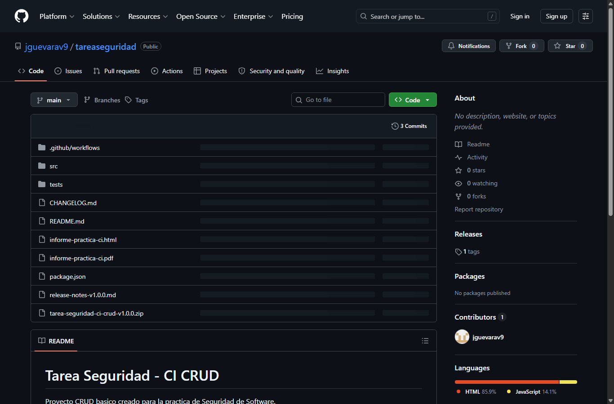
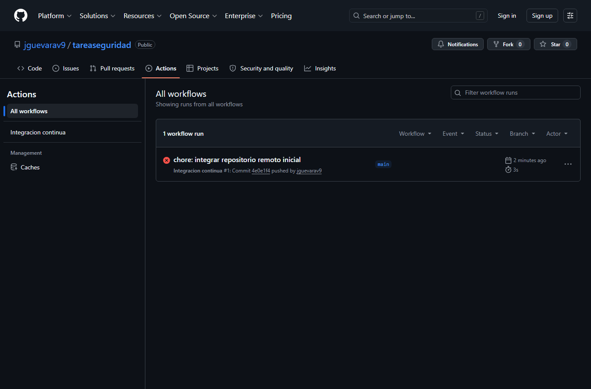
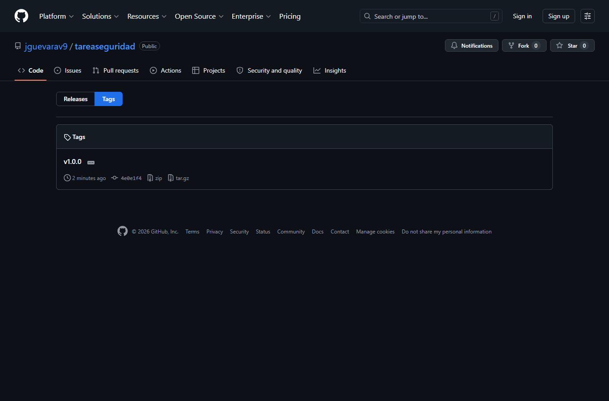

| Unidad | Tema | Subtema |
|---|---|---|
| 1. Introduccion a la seguridad de software. | Fundamentos de la seguridad de software | Introduccion; amenazas a la seguridad del software; fuentes de inseguridad del software; necesidad de auditoria de software. |
| 1. Introduccion a la seguridad de software. | Software seguro | Introduccion; definicion de propiedades de software seguro; arquitectura y caracteristicas de seguridad. |
| 1. Introduccion a la seguridad de software. | Vulnerabilidades | Clasificacion de vulnerabilidades; bases de datos de vulnerabilidades; riesgos y amenazas. |
Resultado de aprendizaje: Describir conceptos de vulnerabilidades relacionados a la seguridad de software.
Tipo de practica: Asistida / No asistida.
Evaluacion: Individual y grupal. Cantidad de grupos: 1. Cantidad de alumnos: 1.
Implementar un flujo basico de integracion continua en un proyecto de software, utilizando herramientas automatizadas como GitHub Actions, con el fin de validar automaticamente la construccion y sintaxis del sistema al realizar cambios en el repositorio, promoviendo buenas practicas en la gestion de la configuracion y la colaboracion en equipos de desarrollo.
| Tipo de ambiente | Nombre | Ubicacion |
|---|---|---|
| Laboratorio | Laboratorio de computacion redes | Laboratorio de redes - campus universidad (CAP: 20) |
| Cantidad | Unidad | Equipo / material | Descripcion |
|---|---|---|---|
| 1 | Unidad/es | Computadora | Disponible en laboratorio |
| 1 | Unidad/es | Acceso a Internet | Disponible en laboratorio |
Para la practica se creo desde cero un proyecto CRUD basico de tareas con JavaScript y Node.js. El sistema permite crear, listar, actualizar y eliminar tareas mediante una clase repositorio, lo que facilita validar reglas de negocio simples y ejecutar pruebas automatizadas sin depender de servicios externos.
| Elemento | Descripcion |
|---|---|
| Nombre del proyecto | tarea-seguridad-ci-crud |
| Lenguaje | JavaScript ejecutado con Node.js |
| Modulo principal | src/app.js |
| Pruebas | tests/app.test.js |
| Pipeline CI | .github/workflows/ci.yml |
| Concepto | Hallazgo aplicado al proyecto | Relacion teorica |
|---|---|---|
| Administracion del cambio | Los cambios se organizan como mejoras o correcciones sobre ramas de trabajo. Cada cambio queda documentado mediante commits y Pull Requests. | Permite controlar modificaciones, reducir errores y mantener trazabilidad sobre decisiones tecnicas. |
| Gestion de versiones | Se propone trabajar con rama principal main, ramas por funcionalidad y etiquetas de version como v1.0.0. |
La version permite identificar entregas estables, reproducir estados anteriores y auditar el historial del software. |
| Construccion del sistema | La construccion se valida con npm run build, que revisa la sintaxis del archivo principal con node --check. |
La automatizacion disminuye fallos humanos y valida que el codigo pueda integrarse correctamente. |
| Gestion de entregas | La entrega se simula con changelog, notas de release, version v1.0.0 y artefacto comprimido. |
Una entrega formal conserva evidencias, alcance de cambios y version liberada. |
| Comando | Uso | Explicacion |
|---|---|---|
git init | Inicializar repositorio | Crea la carpeta interna .git para controlar versiones del proyecto. |
git add . | Preparar cambios | Agrega archivos al area de preparacion antes del commit. |
git commit -m "feat: crear proyecto base con ci" | Registrar cambios | Guarda una version del proyecto con un mensaje descriptivo. |
git checkout -b feature/crud-tareas | Crear rama | Permite trabajar una funcionalidad sin afectar directamente la rama principal. |
git status | Revisar estado | Muestra archivos modificados, agregados o pendientes. |
git log --oneline | Consultar historial | Presenta los commits realizados de forma resumida. |
git tag v1.0.0 | Etiquetar version | Marca una version estable para entrega. |
Se recomienda usar mensajes cortos y descriptivos siguiendo una convencion simple:
Al subir el proyecto a GitHub se deben capturar las siguientes pantallas: repositorio creado, ramas generadas, Pull Request abierto, historial de commits y estado del workflow de GitHub Actions.
Se implemento un pipeline basico de GitHub Actions que se ejecuta al realizar cambios en la rama main o al abrir un Pull Request. El pipeline descarga el codigo, configura Node.js, valida la sintaxis y ejecuta pruebas automatizadas.
name: Integracion continua
on:
push:
branches: [main]
pull_request:
branches: [main]
jobs:
validar-proyecto:
runs-on: ubuntu-latest
steps:
- name: Descargar codigo
uses: actions/checkout@v4
- name: Configurar Node.js
uses: actions/setup-node@v4
with:
node-version: "20"
- name: Validar sintaxis
run: npm run build
- name: Ejecutar pruebas
run: npm test
| Paso | Resultado esperado |
|---|---|
| Descargar codigo | Repositorio disponible en el ambiente de ejecucion. |
| Configurar Node.js | Node.js version 20 instalado correctamente. |
| Validar sintaxis | El archivo src/app.js no presenta errores de sintaxis. |
| Ejecutar pruebas | Las pruebas CRUD finalizan correctamente. |
| Entregable | Evidencia generada |
|---|---|
| Nombre de version | v1.0.0 |
| Archivo comprimido | tarea-seguridad-ci-crud-v1.0.0.zip |
| Changelog | CHANGELOG.md |
| Repositorio de artefactos | GitHub Releases, al publicar la version en el repositorio remoto. |
El uso de Git permite mantener trazabilidad sobre cada modificacion del codigo. Las ramas separan el trabajo por funcionalidad, los commits documentan el avance y los Pull Requests permiten revisar cambios antes de fusionarlos. La version v1.0.0 representa una entrega inicial estable del CRUD y del pipeline CI.
Se implemento un proyecto CRUD basico desde cero y se configuro un flujo de integracion continua mediante GitHub Actions. El pipeline valida la sintaxis y ejecuta pruebas automatizadas, cumpliendo el objetivo de automatizar controles minimos antes de integrar cambios. Tambien se documento el control de versiones, la politica de commits, el flujo de Pull Requests y la entrega simulada del producto.
| Requisito de la guia | Evidencia generada | Estado |
|---|---|---|
| Seleccionar o crear un proyecto CRUD. | Proyecto CRUD de tareas creado en src/app.js, con pruebas en tests/app.test.js. |
Cumple |
| Analizar procesos de cambio, control de versiones, construccion e integracion. | Tabla de hallazgos en la Sesion 1 del informe. | Cumple |
| Configurar repositorio en GitHub. | Repositorio publicado en https://github.com/jguevarav9/tareaseguridad. |
Cumple |
| Crear ramas por funcionalidad o rol. | Rama feature/evidencias-practica usada para agregar las evidencias finales. |
Cumple |
| Registrar comandos Git y politica de commits. | Tabla de comandos y politica feat, fix, docs, test, ci. |
Cumple |
| Implementar herramienta de construccion automatizada. | Scripts npm run build, npm test y npm run ci definidos en package.json. |
Cumple |
| Configurar pipeline CI. | Workflow en .github/workflows/ci.yml con validacion de sintaxis y pruebas. |
Cumple |
| Agregar captura de ejecucion del pipeline. | Captura evidencias/captura-actions.png incluida en este informe. |
Cumple |
| Simular entrega de release. | Tag v1.0.0, archivo tarea-seguridad-ci-crud-v1.0.0.zip y CHANGELOG.md. |
Cumple |


